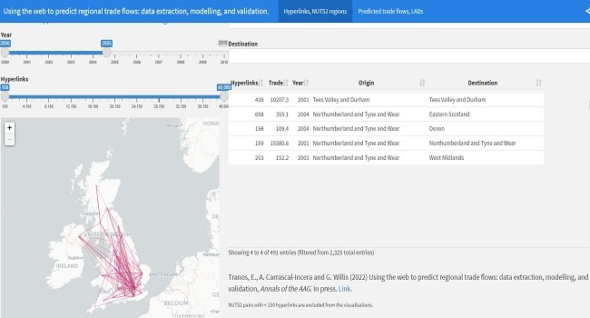
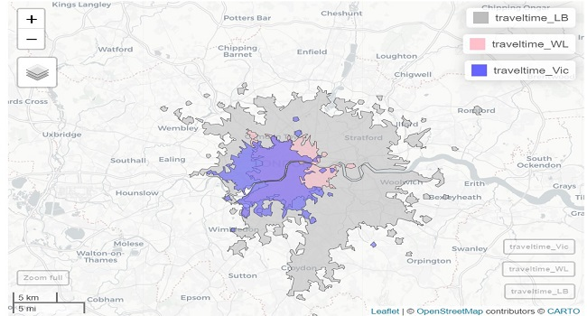
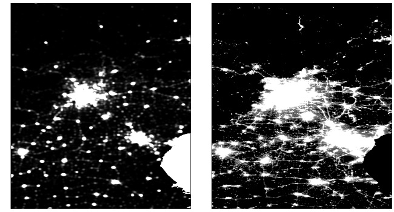
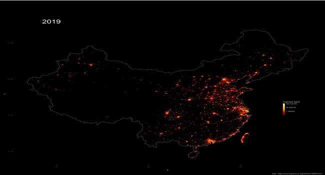
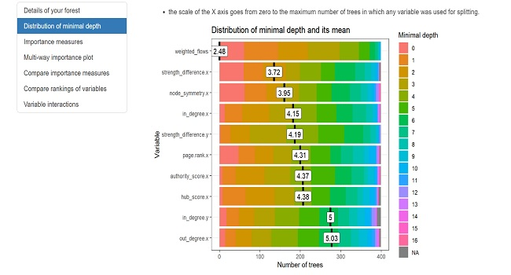
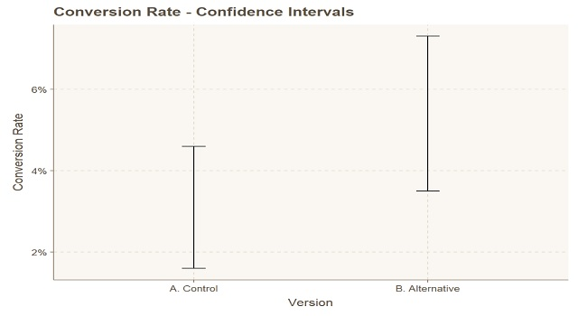
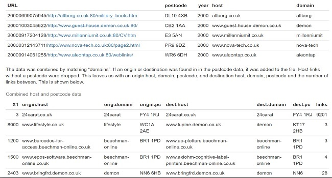

Full index
Projects and analysis
A mixture of things I wanted to build, questions I wanted to investigate and work that grew out of my research. Recent projects have taken me further into application development; older ones are mostly spatial analysis, statistics and maps.
Giggity — London gigs
An attempt to stop missing gigs. Bringing together Ticketmaster listings and London venue programmes, while learning how to turn a data pipeline into a working web app.
GIS · Network SimulationTransitFlow — metro network modelling
A fun experiment in building a metro-network model, starting with Beijing and seeing whether the same approach could work across other cities.
GIS · Spatial RegressionHouse prices and London rail access
How much does access to the railway matter for London house prices, and does the relationship look the same everywhere?
Machine Learning · Network RegressionRegional hyperlinks and trade flows
Can links between websites tell us something about trade between regions? Research combining web data, network analysis and predictive modelling. Published in the Annals of the American Association of Geographers.

GIS · Travel CatchmentsLocation choice — London travel catchments
Exploring which parts of London are within reach of different stations, and how the answer changes depending on where you start.

GIS · Spatial Kernel DensityFinding Beijing’s urban extent
Combining satellite night lights and points of interest to investigate where Beijing’s built-up area ends and its surroundings begin.

GIS · Satellite RadiometryChina’s night lights, 2000–2019
Twenty years of harmonised satellite night-light data, brought together in an animation to explore how patterns of light changed across China.

Machine Learning · Tree DiagnosticsRandom forest - variable importance diagnostics
Looking more closely at which variables a random forest relies on, and what its importance scores mean.

Machine Learning · A/B Testing & InferenceA/B testing, worked example
A worked example covering effect sizes, uncertainty and the point at which a difference becomes convincing.

Data Engineering · Spatial ETLHyperlink data processing pipeline
The work behind the hyperlink research: cleaning domains, resolving locations and connecting web records to geographic boundaries.
